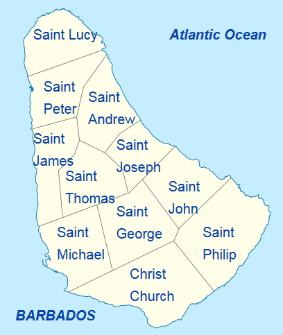

In spring 2019 we had a holiday in Barbados. I had long known that there were Hingstons/Hinksons in Barbados but did not know how (or if) they were connected to Hingstons elsewhere. The Barbados record office has many records, and also has official copies of wills, which give a lot of information but I did not have time to copy many of them. I hope to return. The spelling of the name is almost invariably as Hinkson but I do not regard that as significant.
What follows in this page is a summary of what I could find in the record office, most of which is based on wills. It is not possible to review these without considering the reality of slavery; many wills, including those of the poorest white familes, refer to leaving slaves to their children, and in the case of female slaves this includes any children they have now, or in the future. There is even one case where a man sells his mother's slave in order to pay for his own funeral. It does not follow that all of the Hinksons mentioned here were white; white men often had children by coloured women and in many cases the wills make provision for the woman and the children. It was also clearly common for slaves to take the surname of their owner and once freed they could and did own property that they left to others.
There are about 100 marriages of Hinkson men listed here, each of which is a potential family. There is a lot more work that can be done to link together the various families listed. If anyone has more information please let me know.
Barbados is the most easterly of the Caribbean islands and was claimed for England in 1625, at which time it was uninhabited; the original Carib population had apparently been wiped out by Spanish and Portugese slavers. Settlement began in 1627 and the original settlers took out their own indentured servants. These are sometimes referred to as "white slaves" since they were not free and had to work for their master, but at the end of a fixed period, usually 10 years, they were released from bondage and given 10 acres of land that they could work for themselves.
The early colony had a hard time; the thick forest had to be cleared and the first cash crop grown, tobacco, was of poor quality. The early population was largely male and it became increasingly difficult to attract a workforce. In 1642, James Drax started experimenting with sugar cane using skills he had learnt from Dutch settlers in northern Brazil. This was very successful, and became known as "white gold", but was very labour intensive and required an integrated operation because the sugar sap had to be extracted and processed before it fermented. With fewer workers coming willingly, and with the upheavals at home and in Barbados caused by the Civil War, many workers, mostly men, were sent by magistrates in Bristol working at the behest of the Bristol Merchant Venturers. Some were indentured servants, some petty felons, others prisoners of (civil) war. It seems that the first Hingston in Barbados, 1. William Hingson was one of these.
The difficulty of obtaining labour from home led directly to the trade in African slaves who were reported to be better suited to the heat and better workers. There was a major slave revolt in 1816 (The Bussa revolt) and slavery was finally abolished in all British territories in 1834. See a summary of the slave history here. It is not possible to consider the history of Barbados, or of the Hinkson families without acknowledging this history, so I have made no attempt to hide the families "ownership" of slaves.
 |
| Locations in Barbados are normally referred to the relevant parish. The capital, Georgetown, is in St. Michael. |
(Much of the above information has been taken from The Sugar Barons by Matthew Parker, ISBN 9780099558453).
1. WILLIAM HINGSON , a grocer, was indentured to William Rodney, a merchant of Bristol, and was sent to Barbados on 20 Mar 1655 for a period of three years. It is not clear whether this was done willingly; he is listed as one of those sent by Bristol Magistrates and this may have been punishment for a minor crime. Twelve people were sent to the island in the same month, 4 of them under Rodney who was responsible for taking 51 "servants" from Bristol to Barbados or Virginia. William is the first member of the Hingston family that we know of on the island. (William Rodney came from Catcott in Somerset and was born in 1637. He was made a Merchant Venturer at Bristol in 1665, and was a merchant on the ship Robert, of Bristol, bound for the Barbados in 1667. He was a resident of New York City 28 January 1674/5, was a Royal Prosecutor there by July 1675 and also Surveyor of the Customs. While he served as a colonial official in New York, his family evidently remained in Bristol. It appears that he engaged in the trade between the West Indies and New York. He died at sea while bound from the island of Nevis to New York on board the vessel Lavrell, in the Sound off New Haven about January 1678/9.) It is possible that William Hingson went to Barbados as an an indentured servant rather than as a felon, but his status would not have been much better than that of a slave, at least for the duration of his indenture. Life expectancy on the island was low, especially for manual workers, and his chances of survival would not have been good. If he did survive his period of indenture he would probably have remained on the island and may have been granted a small parcel of land. He would have been about the right age to be the father of the 3. Edward , his sister Joan and 4. Nicholas but we have no evidence for this or any other descendants.
2. GEORGE HINGSTON was a "Factor" (Agent) for the Royal African Company and sailed on the ship The Arthur to New Calibar (now in Nigeria) in 1677-78 to trade for slaves, taking them to Barbados. The original ship's log written by George has been transcribed for the National Archives but the log shows that George returned to England after his voyage. However, it is possible that this was not his only slaving trip so he may have visited the island again. Alternative download link from Historical Association.
There was a census taken in 1715 that listed two Hinkson families on the island that are identified here as 3. Edward living in St Peters and 4. Nicholas living in St Andrew.
3. EDWARD HINKSON was born about 1655. He is the right age to be the son of 1. William Hingson but we have no other evidence . He had a sister JOAN HINKSON who married ... DOWDING, probably in Barbados. Edward married MARY ... who was born about 1664. (HAT says she was Elisabeth A Hobbes and that they married in about 1695; this may be correct if he married twice). He appears to have held about 15 or 16 acres in St Joseph but at the time of the 1715 census was living in the parish of St Peter and aged 60 (so born ~1655). The census does not give names for the family but includes one woman aged 61, presumably his wife, a man aged 21 (born 1694), a girl 12 (1703) and a boy 8 (1707), all presumably his children. The census only lists white people so his slaves were not included.
Edward died in 1725 and his will, which was dated 28 Sep 1725 was formally accepted and copied into the register on 21 Feb 1726 (Vol 2 page 355). He is described as being of St Joseph and his will leaves all his property to his wife Mary and directs that an area 60ft square be left around his grave to become a burial place for all his family. To his son Edward he leaves 10½ acres of land, being the land he now lives in. To his son Daniel he leaves the negro man Inaminah and one negro woman Banibah, and all her increase (i.e. any children she has) plus £15. To his son Joseph he leaves one negro man Jack and one woman Anbah plus 3½ acres he bought from his sister JOAN DOWDING. To his son Samuel he leaves two negro boys Quaeco and Cambridge and one woman Hannah. To his daughter Eizabeth Hallinside he leaves one negro woman Sibboe and £20. To his daughter Hester Bradshaw one gold ring of 25s value. To his daughter Rebecca Hinkson one negro woman Betty and another Doll and her child Coobah, and says she is to have accommodation in the dwelling house out of the profits of my estate. He also leaves rings valued at 25s to Edward, Daniel, Joseph, Samuel, Elizabeth and Hester, and the will mentions grandsons Edward Hinkson and Edward Martin Hinkson.
There is a record in the Barbados archives of an Edward Hinson owning 16 acres of land in St Joseph in 1679.
There is online a Hinkson-Alleyne tree (HAT) that seems to start with 101. Edward but differs in many respects from what is given in this Edward's will.
Edward's children (who would have been born ~1690-1705) include:-
4. NICHOLAS HINCKSON was born ~1672. He is the right age to be the son of 1. William Hingson but we have no other evidence . He lived in St Andrew where he farmed and owned slaves. He is listed in the 1715 census as living in the parish of St. Andrew. The family is listed as Nicho. Hinckson aged 43 (so born ~1672), Mary 39, Nicho. 16, John 2, Rebecker (13), Mary 10, Ester 8, Elizabeth 5 and Joseph 1. He married MARY .... who had been born about 1676. He died in 1749.
Nicholas' will is also available (Vol 21, page 213). It is dated 28 Nov 1746 and was proved on 29 Nov 1749. He was living in the parish of St Andrew. His wife Mary received negro boys Tom and Charles and a girl Aky, plus a cow, and the residue of his estate. His son Nicholas did not get a specific legacy but his two sons Nathanell and John received £5 each. Nicholas two sons John and James each received a half share of 10 acrees and 9 chains equally divided. His daughter Rebecca Ward received £5 and grandddughter Sarah Ward received a negro girl Quashebah. His daughter Mary Hinkson received £10. His daughter Hester Barrett received £5. His daughter Elizabeth Gibbson received a negro girl Hester and his grandson John Gibbson a negro boy Quashe. His son John Hinkson received a negro girl Sarah. He signed the will with his mark. The will does not specifically list the land where they were living, which would normally have gone to the eldest son, so it seems likely that this was in the residue left to his wife that would go to the younger son later.
Nicholas and Mary's children include:-
5. EDWARD HINKSON was the son of 3. Edward Hinkson and died in 1749 in St Peters. He married MARGARET CALLENDER who outlived him. He left a will dated 10 Mar 1749 and proved on 28 Jan 1750 (Vol 21 page 429). He left to his wife Margaret £10 annually, one negro Frank, his rideing horse and "all my chambers furniture". To his son Edward, "all my whole estate" (presumably from which all the other legacies were paid). To his son Callender Hinkson one negro woman Courelas(?) and £3 annually. To his son Richard Hinkson a negro man Quash and woman Venus plus £100 three years after his death. To his daughter Margatet Hinkson 3 negros Little Fostumy and her children Quaco and Henry plus £150 (six years after his death) plus a feather bed, bolster and pillows and living in my mansion house until marriage. To son Samuel Hinkson £125 (8 years after death) and son James Hinkson £125 (11 years after death) and maintenance until the expiry of his apprenticeship. To son-in-law John Hussey a gold ring and to his wife and my daughter Elizabeth a ring of moyadone (lesser?) value. To my sisters-in-law Mary and Elizabeth Callender a gold ring each.
It seems likely that 5. Edward was the son of 3. Edward and his wife was born a Callender and that the times when the younger children inherited their money probably indicates when they became adults, which other wills seem to imply happened when they were 21.
Edward and Margaret's children include:-
6. JOHN HINKSON of the parish of St Andrew. If he is the son of 4. Nicholas and Mary he would have been born in 1713 so only 37 when he died in 1750. His will was dated 30 Jan 1750 and proved on 14 Mar 1750 (Vol 21 p 447). He left his wife Mary his house and lands until their youngest child reached 21, the household goods and a milking cow to support her and her children.. His sons John, Joseph, Samuel, William and James would then share the land in equal shares after the youngest became 21. His daughter Elizabeth would receive a negro woman Sarah and his daughter Mary a negro girl Phillidae and a cow calf. A negro woman Sarah, now in the possession of his mother Mary Hinkson was to be sold immediately to pay his funeral expenses. John signed the will by making his mark.
The children of John and Mary include:-
7. EDWARD HINKSON of St Lucy. He was the son of 5. Edward Hinkson and his wife Margaret Callender , and probably born around 1720. Edwards seems to have had a relationship and children with SARAH MURPHY. He died in May/June 1766. His will was written on 25 Apr 1766 and proved at the Town Hall on 1 Jul 1766l. He was desscribed as being of St Lucy. To his Aunt Elizabeth Callender he left £10 annually and lodging and diet in his dwelling house. To his sister Elizabeth Parris the wife of Mr John Parris a negro man Sam. To sister Margaret Cholmley £8 annually and one negro woman Molly. To brother James Hinkson one negro boy Sandy and one negro woman Aubah, with my Beauroure (Bureau?) plus £50 to be paid five years after my death, one truckle bed and bed linen. To niece Elizabeth Hussey Hinkson £60 when she becomes 21, and to niece Mary Judith Straghan Hinkson £60 when she becomes 21, or if they don't reach 21 to his sister Margaret Cholmley's children when they are 21. To nephew Montague Cholmley and negro boy Boatswain when he becomes 21. To niece Margaret Judith Cholmley £60 when she becomes 21. To Sarah Murphy the sum of £4 per annum for 4 years and then £40, one Milch cow and one heifer and one feather bed and bed linen. To my daughter or deemed daughter Elizabeth of Sarah Murphy £50 when she becomes 21, to son or deemed son John of Sarah Murphy £50 when he becomes 21 and daughter or deemed daughter Henrietta of Sarah Murphy £50 when she becomes 21. Elizabeth, John and Henrietta shall be frugally maintained in decent clothing, diet, lodging and washing, learned to read plain writing and cyphering with a negro to wait on them. Everything else to his brother Samuel Hinkson. Brother in law Mr John Parris, Samuel Hinkson and James Hinkson to be executors.. (Vol 17, page 526).
The children of Edward Hinkson and Sara Murphy appear to be
8. SAMUEL HINKSON. He was the son of 5. Edward Hinkson and his wife Margaret Callender born about 1732. Of St Michael, Merchant. He appears not to have married. He died at the end of July 1766. His will was written on 20 Jul 1766 and proved 30 Jul 1766. To his sister Elizabeth Parris wife of Mr John Parris £15 to be paid three years after death for the purchase of a ring. To sister Margaret Cholmley wife of Mr James Cholmley £40 to be paid 10 years after his death. To nieces Elizabeth Hussy Hinkson and, Mary Straghan Hinkson and Mary Judith Cholmley and to nephew Montague Cholmley £35 each when they become 21. [ It is not clear who the first two nieces were; Edwards sister was originally Elizabeth Hussey but was now Elizabeth Parris but she is named in the will; they might also have been the daughters of Samuel's brothers Richard or Callender who aren't named. This needs resolving.] All the rest of his estate to aunt Elizabeth Callender. Also £7 10s to worthy friend Thomas Walker to buy him a ring. After decease of his aunt everything to go to his brother James Hinkson. Elizabeth Callender, James Hinkson and Thomas Walker executors. Signed and sealed 20th July 1766. (Barbados archives Vol 17, page 542)
9. JAMES HINKSON of St Lucy. He was the son of 5. Edward Hinkson and his wife Margaret Callender and born about 1735. He married ESTHER (possibly BRADSHAW?). He died early in 1790. His will was written on 18 Nov 1789 and proved at Pilgrim on 27 Apr 1790. To his wife Ester Hinkson 2 negro slaves John, a man, and Kate, a girl, also all his estate for the rest of her life, after her death £25 to nephew Montague Cholmley, £25 to niece Mary Judith Cholmley, and the rest to two nieces Elizabeth Strassey White, wife of Nicholas White and Mary Judith Straghan Nowell, wife of Nathaniel Nowell. Esther and two friends John Kellman, senior, and Edward Licorish executors. The witnesses were William Jones, John Kellman, John Wheelwright. (Barbados archives Vol 34, page 21). Esther died about five years later. Her will was written on 11 Oct 1794; she made her mark. The will was proved at Pilgrim on 29 Sep 1795. Esther Hinkson of St Lucy. Lot of stuff about an indenture between James Hinkson, planter of St Lucy (since deceased) (her husband), Esther Hinkson and Samuel Bradshaw, also of St Lucy, planter, to the effect that Esther retained the right to sell certain slaves mentioned in the indenture which she is now exercising. To niece Jane Bradshaw 5 shillings. To nephew John Wheelwright £25 paid 12 months after her death. To nephew Samuel McGeary two slaves Andrew a boy and Polly a girl. To niece Mary McGeary a negro girl Nancy. To nephew John McGeary three slaves, John a man, Reya a boy and Kate a girl. John McGeary also gets the crop growing and the residue of her estate. Nephews John Wheelwright, Samuel and John McGreary executors. (Barbados archives Vol 38, page 44)
10. SAMUEL HINKSON of St John. Presumably born c. 1785. Married 11 Jan 1810 to SUSANNA TEMPRO at St Joseph. Died c. June/July 1857. (Not listed in HAT but inferred from information about John Richards Hinkson).
Samuel's will was signed 17 May 1857 and was proved 10 Jul 1857. He gave to his domestic servant Priscilla half an acre of land from his estate and a house to be erected thereon of boards and shingled to contain a public room and two chambers and a kitchen and for the use of her children Elizabeth, Frederica and Catherine Francis, girls and James Francis and Joseph Hill boys and on her death house and land to be sold and divided between the said children. Also gave to his relation and godson John Tempro one acre of land around his present residence. Remainder of the estate to son John Richard Hinkson who was also executor. (Barbados archives Vol 76, page 388).
Samuel and Susanna had at least one son:-
11. JOHN RICHARD HINKSON would have been born about 1810. The marriage entry says he was the son of 10. Samuel Hinkson and Susanna Tempro , but the HAT tree says he was the son of Joseph, which clearly cannot be correct. See Wikitree
John married, firstly, EVELINA BRIGGS on 2 Sep 1835 at St Philip, and secondly, when he is described as "son of Samuel", CLARA McCLEAN (1856-) at St Michael, Barbados 15 Oct 1879. Owned the Wildey plantation, St Michael.
John's will was first written 10 Apr 1879, with two later codicils, and proved 8 Jul 1887 in Court of Ordinary, Barbados. He leaves to his daughters Sarah Anne Hinkson and Susan Hinkson all household furniture, linen, china plate etc and horses, carriages, harness to be divided between them. Land to sons John Hinkson and James Hinkson as trustees to be sold except that Sarah Ann Hinkson must give consent to sale. Trust to be divided into 7 equal shares except that one shall be £1000 less for Augustus Briggs Hinkson because he has already received that amount. 5 shares to go to 5 other children Sarah Anne Hinkson, John Hinkson, Susan Hinkson, James Hinkson and Thomas Garth Hinkson and the remaining share to be divided between grandchildren Nora Evelina Taylor and Edmund Shirley Taylor children of late daughter Evelina Taylor. Trustees at liberty to purchase his property for themselves and any of the other children should be given preference to purchase the Wildey plantation at a value to be agreed. A codicil dated 6 Feb 1880. He has since intermarried Clara Hinkson formerly Clara McClean and says he has made sufficient provision for Clara and any future issue and confirms the original will. 2nd codicil added 14 Jan 1887 relates to £600 advanced to son James Hinkson £600 brought into account by way of hotchpot. (Barbados archives Vol 87 page 95).
John Richard and Evelina had children:-
There is no sign that John had children with Clara but according to the codicil to the will he made separate provision for them in case any were born after he wrote the will.
12. JOHN R. HINKSON son of 11. John Richards Hinkson and Elvira Briggs. (~1810-1887) married MARY HELEN BOVELL (1846-1902)
They had children
13. JAMES R HINKSON son of 11. John Richards Hinkson and Elvira Briggs. born 2 Nov 1841 at Applewhaites Plantation, St Thomas, Barbados and died 1889/90 (not at sea on 16 Dec 1892 as quoted in HAT). He married on 10 Nov 1869 at St Michael Barbados FLORENCE STOPFORD ALLEYNE who was born on 18 Apr 1847 at St. Michael, Barbados the daughter of John Alleyne and Emma Mary (Welch). Florence died early 1889 at St. Michael, Barbados, while he died about a year before James. (The details given in HAT about both dying in 1892 are wrong)
Florence's will was written 8 Jun 1885 and proved 18 Apr 1889 in the Court of Ordinary. Florence Stopford Hinkson, of St Michael, wife of James Hinkson. Appoints Augustus Briggs Hinkson of St Thomas and James John Law of St Michael Trustees and Executors. Indenture dated 9 Jun 1884 between George Henry Alleyne executor of the will of her mother Emma Mary Alleyne, James Hinkson and herself, and Augustus Briggs Hinkson £315 10s 9d, part of a sum of £1,591 secured against a sugar work plantation called Bulkeley situate in St George assigned to Augustus Briggs Hinkson. An indenture dated 8 Jun 1885 between James Hinkson, Florence and Augustus Briggs Hinkson, all the place called Norham, 2 acres, 3 roods and 10 perches in St Michael with dwelling house and other buildings granted to Augustus Briggs Hinkson. (A lot of detailed stuff but it looks like the land was securing loans made to James Hinkson (presumably her husband) by Augustus Briggs Hinkson and she is saying that if he doesn't pay off the debts Augustus gets the Norham property in lieu.) All her other investments and property in UK, Barbados and the Bridgetown Water Company to be shared equally between her children. (Barbados archives, Vol 88, page 4)
James Will was writtem 26 Oct 1889 and proved 24 Jan 1890 in the Court of Ordinary. James Hinkson of Christ Church appoint brother Augustus Briggs Hinkson and friend George William Carrington as trustees. Authorises them to apply £200 for maintenance of children who are still minors out of their share of the estate. Three Life Assurance policies on his own life, one each assigned to Reginald Foderingham Hinkson, Dudley Alleyn Hinkson and James Richard Hinkson. Also other life policies on other people, unnamed, premiums to be paid by his trustees and proceeds to be shared equally by all his children, including the three sons, when the boys become 21 and the girls becomes 21 or marry. Any property unsold at time of his death to be added to general hotchpot. (Barbados Archives Vol 88, page 208)
They had children
14. AUGUSTUS BRIGGS HINKSON son of 11. 107. John Richards Hinkson and Elvira Briggs , (1843-) married on 10 Dec 1868 at St Michael, Barbados, ALICE MARTHA ALLEYNE, born 15 Sep 1847 at St Michaels, Barbados the daughter of George Henry Alleyne and Elizabeth Sarah (Toppin). Augustus died Sep/Oct 1891 in Barbados
Augustus' Will was written 27 Sep 1890 and proved 23 Oct 1891 Court of Ordinary. Augustus Briggs Hinkson of St Michael. To wife Alice Martha all household effects, carriages etc. Frederick Collings Thomas £50 for acting as trustee and executor. Mentions father John Richards Hinkson and son Ernest Augustus Hinkson (trustee when he becomes 21). Plantation "Rugby" in trust for 5 years and then to be sold. Other real estate also to be sold. Everything to be divided equally between his wife and children when they become 21. [Note - only child named is Ernest but will definitely implies multiple children]. At request of wife sale of "Belfield" postponed and wife should have right to live there as long as she wants. Witnesses Tom Graves and Susan Hinkson (sister?) (Barbadios Archives Vol 89, page 180)
Alice's will was written 17 Jan 1894 and proved 14 Aug 1896 at Court of Ordinary. Alice Martha Hinkson of St Michael. Appoints son Ernest Augustus Hinkson and friend Nathaniel Foderingham Briggs as Executors. Everything to be sold and shared equally between the children (not named in will). Note to children about disposal of plate and jewellery. Three sons should each get a piece of plate. Daughter Alice Maud Bateman and Ethel May Hinkson get specific jewellery as do daughter in law Gertrude Hinkson. Also mentions Maudie and Ethel (presumably daughters). Barbados archives vol 91, page 318)
Augustus and Alice had children:-
15. THOMAS GARTH HINKSON son of 11. John Richards Hinkson and Elvira Briggs , (1847-) married 12 Sep 1876 MARY HARBOURNE HAYNES at Christ Church (1853-). Thomas died May/June 1895. His will was writtem 3 May 1895 and proved 21 Jun 1895 at Court of Ordinary. Thomas Garth Hinkson of St Michael. Appoints friends Ernest Augustus Hinkson and William Lindsay Harbourne Haynes as executors and trustees. Leaves all household goods to his wife Mary Harbourne Hinkson. Things in trust for wife and after her decease or marriage for his two children Mary Evelina Hinkson and Arthur William Garth Hinkson when they are 21 or she marries. (Barbados archives Vol 91, page 67)
Thomas and Mary had two children.
16. REGINALD FODERINGHAM HINKSON son of 13. James R. born 7 Sep 1869 at Wildey Plantation, Barbados (now home to the Barbados National Trust) and died 24 Dec 1909 in New York City. He married CHARLOTTE CLARISSA PORTER (1864-1947)
They had children
17. JAMES RICHARD HINKSON son of 13. James R. (1874-1931) married MARION DAVIS (1879-)
They had children
18. DUDLEY ALLEYN HINKSON son of 13. James R. (1876-1935?) married EDITH (1876-1947)
They had one child
Part of this is taken from the Alleyne Family web page
See also Wikitree
100. EDWARD HINKSON (1655-1726) married ELISABETH A. HOBBES (1654-1788?)
They had children
101. JOHN EDWARD HINKSON son of 100. Edward (1707-1780) married MARGARET (1707-1773)
They had children
102. DANIEL HINKSON son of 100. Edward (1694-1758) married ELIZABETH HOUGHTON (1695-1758)
They had children
103. JOSEPH HINKSON son of 102. Daniel (-1799) married CHRISTOFER?
They had children
104. AARON HINKSON son of 102. Daniel married ALEXANDREA BRUCE (1727-)
They had children
105. ROBERT HINKSON son of
102. Daniel
(1735-) married MARGARET CLEMENTS (1740-)
They had children
106. JOSEPH HINKSON son of 103. Joseph (1772-) married MARY E RAY
They had children
The remainder of the HAT tree has been linked with other records above ( HB11.John Richard Hinkson )
Each one is a potential family
1 Aug 1723 DANIEL HINKSON married ELIZABETH HOUGHTON at St Joseph
24 Sep 1752 JAMES HINKSON married MARGARET HOUGHTON at St Joseph
23 Nov 1755 JOHN HINKSON married ELVIRA HOBBES at St Joseph
23 Mar 1759 RICHARD HINKSON married MARY HOWARD at St Michael
31 Aug 1760 JOSEPH HINKSON married LUCY FORSTER at St Joseph
4 Feb 1763 JAMES HINKSON married MARY STOREY at St Joseph
18 Apr 1763 JOSEPH HINKSON married MARY PHILLIPS at St Joseph
25 Sep 1763 ROBERT HINKSON married MARGARET CLEMENTS at St Joseph
29 Mar 1766 JOSEPH HINKSON married CHRISTIAN STOREY at St Joseph
30 Mar 1766 JOHN HINKSON married RACHAEL GOLLOP at St Joseph
1 Jan 1767 JAMES HINKSON married HESTER BRADSHAW at St Joseph
12 Jan 1769 JOHN HINKSON married JANE NEBLETT at St James
Jul 1770 WILLIAM HINKSON married ELIZABETH HOBBES at St Joseph
7 Nov 1773 JOSEPH HINKSON married JOICE WHITE at St John
30 Aug 1777 JOSEPH HINKSON married MARY ANN CROOME at St Joseph
22 Jul 1779 SAMUEL HINKSON married JANE GIBBES at St Michael
22 Nov 1783 EDWARD HINKSON married MARY CLARKE at St Thomas
4 Feb 1786 JOHN MURPHY HINKSON married ANN WILLIAMS at St James
12 Feb 1786 THOMAS HINKSON married MARY GALLOP at St Joseph
3 Feb 1788 JOHN HINKSON married SARAH MARSHALL at St Joseph
1789 EDWARD HINKSON married ELIZA DRINKWATER SHAW at St John
18 Jun 1789 SAMUEL HINKSON married MARY YEARWOOD at St Lucy
20 Nov 1790 RICHARD HINKSON married SARAH WHITEHALL at St Thomas
31 Mar 1793 BENJAMIN HINKSON married ELIZABETH BALEY at St Joseph
1 Mar 1794 JOHN MATLEY HINKSON married MARGARET MARSHALL at St Joseph
11 Jun 1795 JOHN HINKSON married BENJAMIN VAUGHAN HOYTE at St James (N.B. Two men - The second one is probably the father of the bride)
1796 JOSEPH HINKSON married SARAH HAREWOOD at St Joseph
30 Mar 1799 JOHN FRANCIS HINKSON married SARAH ADAMSON at St Joseph
24 May 1801 WILLIAM HINKSON married MARY BRACE at St Joseph
1802 JOHN MOTLEY HINKSON married ELIZABETH ANN BAYLEY at St Joseph
10 Sep 1803 JOSEPH HINKSON married MARY ELEANOR RAY at St Joseph
23 Dec 1805 HENRY JAMES HINKSON married MARY ELIZABETH RUDDER at St Joseph
24 May 1806 JOSEPH HINKSON married MARY LOGAN at St Michael
31 May 1807 GEORGE HINKSON married HENRIETTA SAUNDERS at St James
11 Jan 1810 SAMUEL HINKSON married SUSANNA TEMPRO at St Joseph
1 Oct 1819 JOHN WILLIAM HINKSON married CHARLOTTE PETERKIN at St Joseph
20 Oct 1819 JOSEPH HINKSON married MARY ANN FARMER at St Joseph
24 Dec 1820 JAMES THOMAS HINKSON married REBECCA JANE PETERKINS at St Joseph
11 May 1826 JOHN HENRY HINKSON married MARY ABEL BOIDIG ROSS at St Andrew
6 Dec 1827 JOHN RICHARD HINKSON married JOANNA PAREE SPOONER at St John
28 Jun 1828 JAMES WILLIAM HINKSON married AMELIA JANE BRYAN at St Joseph
3 Dec 1829 JOSEPH THOMAS HINKSON married MARY GIBBES WRONG at St James
14 Mar 1833 JOHN FRANCIS HINKSON married SUSAN ELIZABETH DUESBERG married at St James
7 Nov 1833 JAMES WILLIAM HINKSON married LUCRETIA WEEKS at St John
27 Aug 1835 JOHN RICHARD HINKSON married EVELINA BRIGGS at St Philip
10 Mar 1838 JAMES THOMAS HINKSON married CHARLOTTE (no surname) at St Philip
27 Oct 1838 JAMES HINKSON married FANNY MIMBAH at St John
1 Dec 1838 ROBERT HINKSON married BETTY AGNESS (no surname) at St John
30 Apr 1839 JOSEPH HINKSON married SARAH PAYNE at St Michael
14 Nov 1839 JOHN WILLIAM HINKSON married JEMIMA HINKSON (sic) at St James
8 Jul 1841 RICHARD HINKSON married FRANCES LORD at St John
14 Aug 1841 SAMUEL HINKSON married MARY JANE PROVERBS at St George
9 Dec 1841 JOHN WILLIAM HINKSON married ELIZABETH ANN MATTHEWS at St Michael
18 Aug 1842 RICHARD HINKSON married MARY REBECCA JONES at St George
3 Aug 1843 BELFORD HINKSON married MARY T BELGRAVE at St Philip
10 Aug 1843 SAMUEL JAMES HINKSON married SARAH RAWLINS BRADSHAW at St Andrew
10 Aug 1843 WILLIAM EDWARD HINKSON married ELIZA ANN BRADSHAW at St Andrew
26 Aug 1843 RICHARD THOMAS HINKSON married FRANCES FARMER at St John
10 Oct 1844 GEORGE BRERETON HINKSON married ELIZABETH CHRISTIAN CARTER at St Michael
17 Jun 1847 SAMUEL HENRY HINKSON married LOUISA ANN HINKSON (sic) at St James
14 Oct 1847 RENN SAMUEL HINKSON married MARY JONES at St Michael
24 May 1849 SAMUEL THOMAS HINKSON married QUEEN CHARLOTTE COGGIN at St Lucy
20 Feb 1851 SAMUEL HINKSON married CATHERINE JANE POLLARD at St Thomas (married at Holy Innocents Chapel of Ease)
27 Feb 1851 JAMES WILLIAM HINKSON married AGNES BRATHWAITE McCOY at St Peter
21 Feb 1852 JOHN WILLIAM HINKSON married SARAH AGORD at St Michael
19 May 1853 SAMUEL HENRY HINKSON married SARAH JANE REECE at St James
11 Aug 1853 ROBERT JAMES HINKSON married MARY ELIZABETH BARKER at St John
13 Aug 1853 NATHANIEL HINKSON married HANNAH JANE SPOONER at St George
8 Sep 1853 JOHN HENRY HINKSON married LUCRETIA LITTLEJOHN at St James
8 Dec 1853 JAMES THOMAS EDWARD HINKSON married MARGARET ANN MORRIS at St Joseph
15 Dec 1853 JOHN HINKSON married MARY MOORE at St John
8 Jul 1854 JAMES WILLIAM HINKSON married FRANCES ANNE WALCOTT at St John
17 Dec 1854 GEORGE HINKSON married HENRIETTA GILL at St George
1 Jul 1855 RICHARD HINKSON married DOLLY ANNE McCOLIN at St John
26 Apr 1856 EDWARD THOMAS HINKSON married ELIZABETH ANN SCOTT at St George
19 Jun 1856 BENJAMIN BARRONE HINKSON married MARY ALLEYNE ELVIRA HOBBS at Barbados (parish not given)
18 Sep 1856 SAMUEL CRICHLOW HINKSON married JOANNA JANE PHILIPS at St James
19 Oct 1858 JAMES HINKSON married ANNE FRANCES SKEETE at St Joseph
16 Dec 1858 JOSEPH HENRY HINKSON married ELIZA ALFRED PETERKINS at St John
10 Apr 1860 GEORGE THOMAS HINKSON married ELEANOR FRANCES CARRINGTON at St Thomas
30 Jun 1860 THOMAS LOUIS HINKSON married ELIZABETH GARRETT at St Philip
19 May 1861 SAMUEL WILLIAM JONES HINKSON married ELIZABETH FRANCES HARRIS at St James
5 May 1864 PHILIP AUGUSTUS HINKSON married MARY ELIZABETH HARRIS at St Michael
28 Jun 1865 RICHARD BENJAMIN HINKSON married MARY REBECCA KING at St Michael
25 Apr 1867 108. JOHN HINKSON married MARY HELEN BOXILL at St Michael
27 May 1868 GEORGE BRERETON HINKSON married ELIZABETH JANE HAYES at St John
10 Dec 1868 110. AUGUSTUS BRIGGS HINKSON married ALICE MARTHA ALLEYNE at St Michael
10 Nov 1869 109. JAMES HINKSON married FLORENCE STOFFORD ALLEYNE at St Michael
28 Oct 1871 NATHANAEL HINKSON married MARGARET AUGUSTA GITTENS at St George
14 Apr 1873 RICHARD BENJAMIN HINKSON married MARY ELIZABETH HALL at St Michael
20 Jan 1874 GEORGE CHARLES FREDERICK HINKSON married MARTHA EARLE at St James
23 May 1874 EDWARD THOMAS HINKSON married NANCY ANN TRALINAN (check) at St George
23 May 1874 ISAAC WALCOTT HINKSON married MARY AUBAH FRERE at St John
16 Jul 1874 JAMES WILLIAM HINKSON married SARAH ELIZABETH GUY at St John
15 May 1875 THOMAS HENRY HINKSON married PRISCILLA ANN JORDAN (check) at St Joseph
17 Aug 1875 JAMES WILLIAM HINKSON married EVA ALICE TYNES at St Michael
4 Nov 1875 CHARLES FRANCIS HINKSON married AMANDA RUTH COZIER at St Joseph
12 Sep 1876 THOMAS GARTH HINKSON, son of John Richard Hinkson married MARY HARBOURNE HAYNES at Christ Church
29 May 1878 WILLIAM ALFRED HINKSON married MARIA FLORENCE ALTON at St Joseph
18 Jul 1878 PHILIP HINKSON married MARGARET ANN WALCOTT at St George
12 Apr 1879 JOHN WILLIAM ELLIS HINKSON son of John H Hinkson married ELIZABETH ANN GIBSON at St James
29 Jun 1879 JOSEPH HINKSON married JANE FRANCIS BELL at St John
14 Aug 1879 WILLIAM ALLEYNE HINKSON son of James married ANN GOODING JOHNSON at St Joseph
15 Oct 1879 JOHN RICHARDS HINKSON son of Samuel married CLARA McCLEAN at St Michael
Others not yet copied
Volume and Page Number refer to locations of the transcriptions
1726 Edward Hinkson Vol 2/Page 358 ( HB#3 )
1749 Nicholas Hinkson 21/213 ( HB#4 )
1750 Edward Hinkson 21/429 ( HB#5 )
1750 John Hinkson 21/447 ( HB#6 )
1760 Benjamin Hinson 15 July 1760 at Pilgrim. Benjamin Hinson of St Michael. Wife Sarah gets everything. signed 18 July 1744. Witness Joseph Smith and Samuel Smith. Joseph Smith certified that the will had been complied with. 30/181. 30/181
1764 Joseph Hinkson 17/153 Certified at Pilgrim 24th Dec 1764 JOSEPH HINKSON of the parish of St Joseph. All estate real and personal to his wife ELIZABETH. To daughter Elizabeth Jones one negro girl Bellindah and then to his granddaughter Elizabeth Susanna Jones. One negro of value £30 to be bought for daughter Sarah Hinkson. At the decease of his wife to son Joseph negro man Benturah, to sons Edward and Richard one negro woman Hannah. To son James Hinkson negro woman Daul but if he has no heirs then to his son Joseph but the increase to his daughter Sarah Hinkson. To daughter Margaret Haughton two negro boys Quaco and Beggar. Wife Elizabeth and son Joseph to be executors. 17/153. So the family of Joseph and Elzabeth are:-
1777 James Hinkson 25th February 1777. James Hinkson of St Joseph. To son Joseph Hinkson 5 shillings in full settlement of any claim he shall make. To son Nicholas one negro man Charles. To wife (not named) one negro man Primus and one milch cow and all my out debts. Also dwelling house and 11 acres of land but if she cannot pay the debts she is to dispose of 5 acres of lower land. After wife dies land and dwelling house to be sold and divided equally between children James, Mary, John, Richard, Thomas, Sarah, Edward and Benjamin. Sealed 25th October 1776. Certified at Pilgrim. 23/538.
This implies family:- JAMES HINKSON of St Joseph married ???1778 Sarah Hinson 3rd December 1778 Sarah Hinson of the parish of St Michael. To sell her Negro girl Nancy to pay her funeral expenses and clear her debts. To son Joseph Hinson a Negro wench Easter and a Negro boy Frank. I give unto Nathaniel Walron, alias Hinkson an infant, a negro woman Peggy and her child William, when he attains 21. If he dies the slaves to go to her daughter Elizabeth Croydon Hinson. Elizabeth Croydon Hinson also gets the house and outbuildings and lands. Also a Negro man Hardship, woman Mimbah, girl Cornelia, girl Mary Ann and mulatto boy John and all furniture. Negro woman Prue to live in house to look after daughter and little negroes and to receive the benefit of her labours and if she is molested to daughter shall see her righted. Elizabeth to be executrix with friend Dr Alexander Barclay. Made her mark 16th Oct 1778. Will certified at Government House. 23/28.
This implies a family:-
1784 Elizabeth Hinkson 7th April 1784. Elizabeth Hinkson of St Joseph. Son Joseph Hinkson £10 immediately. Daughter Elizabeth Jones two negroes named Rosanna and Harriot with their issue. Sons Joseph, Richard and Edward Hinkson and daughter Margaret Haughton and Sarah Ford all remainder shared equally. Sons to be executors. She made her mark 8th August 1780. Witnesses James Freeman Ramsey, Martin Haughton, Theophilus Carter. Martin Haughton swore will had been executed.
This indicates a family:-
(Unknown) Hinkson married Elizabeth. He died before 1784, when she died.
1785 John Hinkson 7th Dec 1785. John Hinkson of St Andrews, planter. Sell his riding horse and 4 head of cattle to pay his debts. Wife Jane Hinkson gets all his estate for her life then to be equally divided among his children. Son John Hinkson 6 acres and a negro woman named Aubah and her increase when he becomes 21. To daughter Rebecca Hinkson when she becomes 21 a Negro woman now with child named Thomazin and the slaves' child to be for the child his wife is now pregnant with. Son William Hinkson when he becomes 21 a negro girl Moll Rose. Son James Hinkson when he becomes 21 a negro girl Molly. Executors to sell negro woman Fanny and money therefrom to be for benefit of son Samuel Hinkson until he becomes 21. The remaining 6 and half acres to be sold on the death of his wife and proceed equally divided between children Rebecca, William, James, Samuel and the unborn child. Wife Jane as executrix with friend Benj Vaughan esq, Mr James Vaughan and Mr James Petterkins as executors. Made his mark 6th May 1785. Will certified after death. 28/519.
This implies a family:- JOHN HINKSON married JANE ... and died Dec 1785. They had children:-
1789 Robert Hinkson 2nd Dec 1789. 19/133. Robert Hinkson of St Andrew. Left everything to his wife (unnamed) and on her death to be shared equally between the children (also unnamed). Brother in law John Clement and friends Wm Straghan and William Allyne Culpeper executors. Signed 12th November 1788. One of the witnesses was a Daniel Hinkson. Certified at Pilgrim.
Probably same as 25 Sep 1763 ROBERT HINKSON married MARGARET CLEMENTS at St Joseph
1790 James Hinkson 29/184 9th October 1793. Joseph Hinkson of St Joseph. To my daughter Margaret Hinkson a cow called Brown. To son Joseph Hinkson a cow called Nancy and he will give the first calf to daughter Sarah Hinkson. To wife Mary Hinkson all the residue during her life, she maintaining and educating the three children, Margaret, Joseph and Sarah. Mary Hinkson, Thomas Phillips junior and George Harding executors. Marked and sealed 8th Sept 1779. Certified at Pilgrim. 29/184
Probably related to marriage. 18 Apr 1763 JOSEPH HINKSON married MARY PHILLIPS at St Joseph
Implies family:- JOSEPH HINKSON married MARY (possibly PHILLIPS?) who had children:-
1801 27th October 1801. John Neblett Hinkson of St Thomas. Wife Benjamina Vaughn Hinkson. Debts to be paid out of his crop and then livestock. To son John William Hinkson two slaves Willey (a man) and Betty (a girl). If wife and son both die then estate, including sale of a negro woman Thomazin, to be shared between brothers William Christopher Hinkson, James Hinkson, Samuel Hinkson and Thomas Hinkson. Wife and brother in law Henry Barrow executors. Mark and seal 6th Nov 1800. Will certified at Pilgrim. 53/116.
There was a marriage 12 Jan 1769 JOHN HINKSON married JANE NEBLETT at St James, presumably John Neblett's parents
11 Jun 1795 JOHN HINKSON married BENJAMINA VAUGHAN HOYTE at St James
Will 1803 B.V. Hinkson 54/3 (not available as too fragile)
This implies two generations of a family:-
JOHN HINKSON born ~1745, married JANE NEBLETT at St James, 12 Jan 1769 They had at least 5 sons
1804 S. Hinkson 54/135 (will not available as fragile)
1806 Richard Hinkson 56/21 (will not available as fragile)
1808 S. (or T.) Hinkson 57/190 (will not available as fragile)
1809 Margret Hinkson 58/6 (will not available as fragile)
1815 Joseph Hinkson 60/166 (will not available as fragile)
1816 J.W. Hinkson 61/62 (will not available as fragile)
1825 C. Hinkson 63/108 (will not available as fragile)
1825 Jos. Hinkson 68/147 (will not available as fragile)
1826 J.F. (sen.) Hinkson 63/170 (will not available as fragile)
1826 Frances Hinkson 63/171 (will not available as fragile)
1826 C.S. Hinkson 64/24 (will not available as fragile)
1833 Ann Hinkson 14 Aug 1833 Proved at Government House. Ann Hinkson, a free coloured woman of St Michael. To Mrs Ann Ames, wife of Samuel Ames I give the cherry tree chairs now in my house. To Miss Hester Lovell one of my large China bowls and to Mr F H Dummett I give the other. Whatever plate she has to Charles Thomas, son of Mrs Ann Thomas and nephew to the late Mr Charles Ames. Everything else to Mrs Sarah Ames, mother of the late Mr Charles Ames except her clothes to her sister Frances Hinkson, now or late of Trinidad. Made mark, undated. Executors Samuel Ames and F H Dummett. 67/126
1840 G. Hinkson 69/162 (will not available as fragile)
(Unknown) HINKSON married HARRIET. probably born ~1790. Harriet still alive in 1861. Existence inferred from wills of the sons.
They had children (order unknown) - probably born c. 1815.
SAMUEL GIBBS HINKSON was probably born about 1815 and appears to have married MARY JANE PROVERBS at St George on 14 Aug 1841. He died in summer of 1872.
In his will, proved 23 Aug 1872 he was described as being of St George (occupation indecipherable). To wife Mary Jane Hinkson all my household furniture, plate and Phaeton, and after her death for my unmarried daughters. Also she shall have a house from the estate for her private use and that of the unmarried daughters. To son Samuel Gibbs Hinkson my silver watch and gold chain and key but not until after the death of his mother. I have a judgement and execution dated 22 March 1862 against Eliza Busby of Parish of Christchurch for £83 6s 9d. This sum is to be kept in reserve at interest for my four youngest children Isadore Gertrude May Hinkson, Eveline Blanche Theodore Hinkson, Lilian Louisa Hinkson and Ethel Rosalie Hinkson, to be paid to each when they attain 21 years. My expectancy under the will of my deceased brother George Brereton Hinkson should be added to the £83 6s 9d mentioned above. Whereas I am the owner of a small sugar plantation called Market Hill to be kept operating for my wife and unmarried daughters when they are eighteen. The executors have the power to sell the estate if they see fit the proceeds to be divided between my children Selina Caroline Hinkson, George Brereton Hinkson, Mary Elizabeth Hinkson, Charles Theodore Hinkson, Anna Julia Hinkson, Francis Frederick Hinkson, Jane Lizette Hinkson, Samuel Gibbs Hinkson, Helen Alberta Hinkson, Isabelle Gertrude May Hinkson, Eveline Blanche Theodore Hinkson, Lilian Louisa Hinkson and Ethel Rosalie Hinkson. Wife and two sons George Brereton and Charles Theodore plus brother in Law Revd Benjamin Collins Nouille(?) as executors. Signed 14th June 1872.
Inventory of the estate of Samuel Gibbs Hinkson. The estate or place called Market Hill in the parish of St George. Seventeen acres with buildings @£126/acre. One house £11. One cart and harness £4. Total £2157. Sworn 1 Feb 1874
ROBERT JAMES HINKSON would have been born about 1830. He married MARY ELIZABETH BARKER on 11 Aug 1853 at St John. He died towards the end of 1881. His will was proved on 13 Jan 1882 in the Court of Ordinary. He was described as being of St Johns. Everything shared between four children Uriah Dibbon Hinkson (daughter), Vienna Hinkson, Gillah (or Jillah or Yillah) Hinkson, Mary Elizabeth Hinkson. Robert seems to have had four daughters:-
1883 Isabella J S Hinkson 85/136 11th May 1883. Isabelle Jane Stanton Hinkson, widow of St Michael. Leaves everything to Wilhelmina Haynes Cook and Helen Wiles Cook, both of St Michael in trust for her daughter Daisy Roberta Maude Hinkson until she reaches 21. Signed 4th April 1883. Certified in Court of Ordinary. 85/136.
1883 James William Hinkson 85/155 JAMES WILLIAM HINKSON would have been born about 1805. He married AMELIA JANE BRYAN at St Joseph on 28 Jun 1828 and was a planter. He died about June 1880; his will was proved on 6 Jul 1883 in the Court of Ordinary. Left everything to his wife Amelia Jane including property land and buildings. After her death to his children. Will signed 26 Jul 1880.
James and Amelia's children were:-
1890 James Hinkson (St Andrew) Entered 31st Jan 1890 Court of Ordinary. James Hinkson of St Andrew. I give to my reputed daughter Amelia Jane Hinkson and my son Albert Hinkson my dwelling house and all my furniture to be divided equally between them. To Amelia 1 rood and 20 perches of land and to Albert 27 perches of land. To my sons James Francis Samuel Hinkson and Gabriel Hinkson 5 shillings each to be paid when they are 21. Made his mark 2nd Mar 1878. 88/218. Implies family:-
1900 George Frederick Hinkson Proved 26 Oct 1900 in Court of Ordinary. George Frederick Hinkson of St Michael, everything to wife Martha Christiana Hinkson. No mention of children. Witnesses and executors Rupert Augustus Puckerin(?) and John Edward Holmes. Signed 12 Oct 1900. 93/202
Index not searched beyond here)
Inventory of the estate of the late Joseph Hinkson as has been shown to us by Mrs Christopher Hinkson (executrix). Ten acres of land in parish of St Joseph @£24/acre. Four acres of land in parish of St Andrew @£9/acre. A negro man £100. Total £376. Filed 1803
Inventory of the estate of th late Samuel Hinkson as shown to us on 8 Nov 1809 by Mary Hinkson administering. Five acres three R (roods?) + surveyor's plan in parish of St James @42/10 per acre. Filed 1810
Inventory of the estate of Samuel Gibbs Hinkson. The estate or place called Market Hill in the parish of St George. Seventeen acres with buildings @£126/acre. One house £11. One cart and harness £4. Total £2157. Sworn 1 Feb 1874.
Note that many come from extracts of the Barbados Gazette and other older newspapers. A volume and page number refers to the Journal of the BHMS whereas a date refers to the time that the entry refers to.
V1/p210 17 May 1825. Samuel Hinkson petitions for L.A. (Legal Access??) to estates of John & Amos Tempro.
19 May 1825. Joseph Hinkson drowned in Indian River
V2/P31 Article about the treatment of negroes on the estates in 1823 contains a letter from Samuel Hinkson written in 1831.
" Dear Sir. Mr Clarke's kindness to me at all times and the good conduct of the Negroes on the property have rendered my labours a pleasure rather than otherwise and made me feel a great interest in everything on the estate.
If there is anything I could think of at present to add to the comforts and happiness of the Negroes I would do it, as well as for their own sakes and the satisfaction they give me as from a desire to comply with your instructions and wishes at that head but they are healthy, happy & cheerful and scarcely ever commit a fault worth noticing.
They are all well clothed and their houses are comfortable and form a very pretty village which is surrounded by a neat fence and their own piece of ground around each of their villages are cultivated in highest manner and afford them so many provisions etc in addition to their other regular allowances that I am at a loss to knew of anything that you or I could do for them to add to their happiness. signed Samuel Hinkson "
V3/P205 18 Jul 1832 John F Hinkson to be surgeon (Colonial General Orders)
V4/p28 10 Jul 1832. On Monday last, suddenly, death of Miss Nancy Hinkson
V5/P47. 2 Sep 1835. John Hinkson married Elvira Briggs at St Philip
V5/P206 20 Jan 1836. Mary Ann, wife of Joseph Hinkson died at home of her son-in-law Samuel Hyde
V6/P103. Death in England of Mrs Gertrude Hinkson widow of the Hon E.A.Hinkson MLC
V6/P216 D'Arcy Cecil Deighton Hinkson is an Annual member of the BHMS
V8/p87 9 Jan 1839. On Wed last death of Elizabeth only daughter of Joseph Hinkson aged 14 years
4 May 1839. Joseph Hinkson married Mrs Sarah Payne at the Cathedral - their united ages amount to 133 years.
6 Nov 1745. Samuel Hinkson witnessed Will of Thomas Harrison of St Michael.
12 Oct 1842. Mr Joseph Hinkson died - an old and respectable inhabitant of this town.
24 Sep 1842. Died at Colleton Estate in St John in his 27th year Rev. Samuel William Hinkson AB of Catherine Hall, Cambridge, late Curate of Farthingstone, Northants.
24 Sep 1844. On Thursday last at the Cathedral Mr George B Hinkson married Miss Elizabeth Christian Carter.
21 Jul 1847. Samuel Hinkson, planter returned to serve on Grand Jury of Court of Sessions
1832. J.F. Hinkson, assistant surgeon in St James Regiment of Militia
29 Apr 1862 to 5 Jan 1866. James R. Hinkson was elected to House and Assembly for St Michael.
Gertrude Deighton, eldest daughter married Ernest Hinkson (the article related to whether Gertrude was, or was not, the eldest daughter of her father. Major scandal in Barbados!)
1857. John F Hinkson MD of Jefferson College, Philadelphia member of Barbados Medical Association.
23 Jun 1857. Samuel Hinkson died aged 78. He was a magistrate and vestryman.
James Hinkson mentioned as neighbour of William Arnoll of Town of Speights
6 Nov 1745. Samuel Hinkson witnessed Will of Thomas Harrison of St Michael.
Samuel Hinkson, clerk to Hon John Harrison, left £50 in Harrison's Will dated 14 Apr 1755.
Mary Gibbs Hinkson , sister in law of Elizabeth Ann Wrong was left £166 13s 4d and also land in Hole Town. Will dated 16 Apr 1851. In same Will, Elizabeth Wrong left Frances Olivia Hinkson (niece-in-law) £208 6s 8d.
7 Nov 1773. St Johns, Barbados, Joseph Hinkson married Joice White
24 Jul 1736. Mary d. of Joseph and Elizabeth Hinkson (bapt?)
2 Nov 1736. Joseph and Thomas, sons of Edward and Margaret Hinkson (bapt.)
7 Mar 1730. Margaret Hinkson bapt.
27 Mar 1730. John Hinkson bapt.
2 Apr 1732. Edward son of Joseph and Elizabeth Hinkson (bapt?)
Alexander Hinkston born 1866 of Barbados awarded Merchant Seaman Medal World War I
1891 Census. John Hinkson, 52, living on own means at 14 Gordon Road W1, London, born Barbados with wife Helen born London and daughter Ada M Simpson (married) born Barbados.
1891 Census. E.A.Hinkson, age 20, undergraduate at Oxford, born Barbados, living at Manor Grande, Bishops Down, Speldhurst, Kent, nephew of G.H.Alleyne, 41, living on own means, born Barbados.
Probate Record. Alice Martha Hinkson of Barbados died 12 Jul 1896 at 14 Spencer Hill, Wimbledon, probate to Ernest Augustus Hinkson, Planter (Will value £296 4s 8d)
Samuel William Hinkson who was admitted to St Catherine's College Cambridge in 1835 (see the university page ) and lived on the Colleton Estate in Barbados. This was one of the largest sugar plantations on the island.
Return to Hingston One-Name Study
Added June 2019. Minor update 23 May 2023. Chris Burgoyne